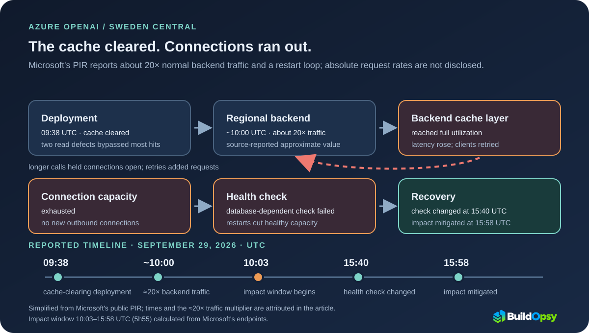

1. The report scopes impact to Sweden Central
Microsoft's Post Incident Review covers Azure OpenAI Service, Foundry Agent Service, Foundry Models and Azure AI services in Sweden Central. It reports intermittent request failures, increased latency and HTTP 500 or 503 errors for a subset of customers. The overall impact window is 10:03–15:58 UTC on September 29. Subtracting the endpoints gives 5 hours 55 minutes.
That is Microsoft's incident window, not a downtime measurement for every customer or resource. The PIR says impact varied by customer and resource; it gives no affected-customer count and does not establish that every Azure OpenAI deployment or region was unavailable.
2. A cache-clearing deployment exposed a backend path
Microsoft describes a regional backend service that retrieves account metadata and configuration. That backend reads from a cache layer and a database. Other internal services that call it also keep their own caches. This distinction matters: the deployment cleared a cache in one internal service, while the regional backend's separate cache later reached full utilization.
At 09:38 UTC, a planned deployment began and cleared the internal cache. Microsoft says two defects in how that service read from its caches caused most lookups to bypass them and call the regional backend directly. By approximately 10:00 UTC, traffic to that backend was about 20 times its normal level. The PIR does not describe the defects in enough detail to reconstruct their code paths.
3. Slow calls and retries consumed connection capacity
In its root-cause account, Microsoft says the surge drove the backend's cache layer to full utilization and increased latency. Slower calls held connections open longer; client retries added more requests while earlier work was still in flight. Microsoft reports that the network connection capacity on the backend's infrastructure instances was exhausted, preventing new outbound connections to both the cache and database layers.
The relationship is directional, not a numeric reconstruction: higher arrival rates and longer time in flight tend to raise concurrent work. The PIR gives an approximate traffic multiplier and says latency increased, but it publishes no absolute arrival rate, average service time, retry rate, cache-hit ratio, node count or connection ceiling. There is not enough public data to calculate how many connections were needed.
4. The health check turned dependency failure into restarts
Each backend instance's automated health check depended on connecting to the database. Once outbound connections could not be established, the check failed and the instance restarted. More restarts left fewer healthy instances to serve requests, while dependent services continued retrying. A database-connectivity problem had become a capacity problem inside the service that needed the database.
Microsoft says the restart behavior primarily extended the incident. Scaling attempts and increased compute did not help until engineers changed the health check so it no longer depended on remote connectivity. Availability began to recover after that change.
5. Service recovery came before the cause was confirmed
Microsoft's response timeline separates the start of customer impact, mitigation and traffic-source identification.
| Time (UTC) | Microsoft's report | What the timestamp establishes |
|---|---|---|
| 09:38 | Internal service deployment began; its cache was cleared. | Change that preceded the traffic surge. |
| ~10:00 | Regional backend traffic rose to about 20× normal. | Approximate source-reported backend load, not total platform traffic. |
| 10:03 | Customer impact began. | Start of Microsoft's overall impact window. |
| 10:17 | Monitoring detected elevated request failures. | Alerting preceded the reported cause identification. |
| 11:30 | Engineers identified connection timeouts to the backend cache and database. | Connection symptoms were identified before the traffic source. |
| 13:55 | Scaling adjustments did not produce significant improvement. | Scaling had not yet restored service. |
| 15:40 | The health check was reconfigured; availability began to recover. | Mitigation addressed the restart loop. |
| 15:58 | Customer impact was mitigated. | End of the reported 5h55 incident window. |
| 16:30 | Teams identified the deployment as the source of increased traffic. | Cause confirmation followed customer-impact mitigation by 32 minutes. |
The ordering is useful for incident response: restoring service did not require waiting for a complete explanation. Microsoft reports that the health-check change began recovery at 15:40, customer impact was mitigated at 15:58, and the traffic source was correlated with the deployment at 16:30. Those are distinct recovery and diagnosis milestones.
6. Guardrails for cache and health-check failures
In its PIR, Microsoft marks the health-check change, cache load-and-latency monitoring and updated troubleshooting guidance as completed. It lists additional throttling and rate limits, more cache capacity, diagnostic improvements and cache partitioning as work with estimated completion dates in October or December 2026. Those dates are estimates in the report, not proof that every item has shipped.
- Keep process liveness separate from dependency health. A failed database connection can make an instance temporarily unable to serve a dependency-dependent request without meaning the process needs a restart. If dependency status changes routing, ensure one shared outage cannot eject or restart every serving instance at once.
- Exercise cold-cache paths before rollout. Test cache-empty and cache-bypass behavior under representative peak load. A cache miss should have a bounded path to the backend, not an uncontrolled multiplier.
- Budget retries against the dependency's capacity. Microsoft's PIR advises customers to review retry patterns, especially exponential backoff. Buildopsy's recommendation is to bound attempts and deadlines as well; the Retry pattern guidance warns that aggressive retries can further degrade a service already near capacity.
- Measure the pressure path directly. Track cache hit rate and latency, outbound connection failures, restart rate and retry volume together. A green process check alone cannot show whether the service can reach its dependencies.
For your own workload, the connection-pool calculator estimates a conservative concurrency requirement from measured peak RPS and p99 latency. It is a planning heuristic, not a reconstruction of Microsoft's undisclosed node limits. The SRE and Observability course's capacity-planning lesson covers the same measurement boundary.
7. Verdict: the cause chain is reported; capacity numbers are not
Microsoft's PIR attributes the incident to this sequence: a deployment cleared an internal cache, two cache-read defects sent most lookups to a regional backend, backend traffic rose to about 20× normal, connections were exhausted, and database-dependent health checks restarted instances. Reconfiguring the check preceded recovery. The 5h55 impact duration is calculated from Microsoft's 10:03 and 15:58 UTC endpoints.
The report does not disclose absolute request rates, cache-hit ratio, number of instances, connection limit, retry count or affected-customer count. Those missing values prevent a capacity reconstruction or financial estimate. This was a Sweden Central Azure AI incident, separate from Microsoft's July West US route-withdrawal event, which involved a different network-maintenance failure.
The design lesson is specific: a cache-miss path, slow dependency and restart-oriented health check can turn one deployment into a shrinking-capacity loop. Keep each boundary observable and make sure recovery actions do not remove the instances still able to serve.
Sources and Method
I checked the current Microsoft Azure Status History PIR for tracking ID 7QL5-Z50 (incident September 29, 2026; retrieved October 17, 2026): “What happened?”, “What went wrong and why?”, “How did we respond?”, “How are we making incidents like this less likely or less impactful?”, “How can customers make incidents like this less impactful?” and the customer-impact note. All incident times are UTC. The 5h55 duration is Buildopsy arithmetic: 15:58 minus 10:03. The 32-minute gap between impact mitigation and cause identification is also calculated: 16:30 minus 15:58. Microsoft's approximately 20× figure is reported traffic to the regional backend by about 10:00; it is not an estimate of total Azure OpenAI traffic. The diagram is an illustration of the published sequence, not a map of private Azure topology.
The causal account is Microsoft's own PIR; Buildopsy does not have independent access to Azure telemetry. The PIR publishes no absolute request rate, retry count, cache-hit ratio, node count, connection ceiling, customer count or financial loss. The article does not infer those values. Recommendations are Buildopsy design guidance, separated from Microsoft's reported remediation status.
- Microsoft Azure Status History: Post Incident Review 7QL5-Z50, Sweden Central Azure OpenAI and Azure AI services (incident September 29, 2026)
- Microsoft Learn: Retry pattern (updated December 9, 2025)
- Buildopsy: Connection Pool Size Calculator — use measured workload inputs; not Microsoft's incident telemetry.
- Buildopsy: SRE and Observability in Production, Lesson 08 on capacity planning
- Buildopsy: Azure West US route-withdrawal postmortem (a separate incident)